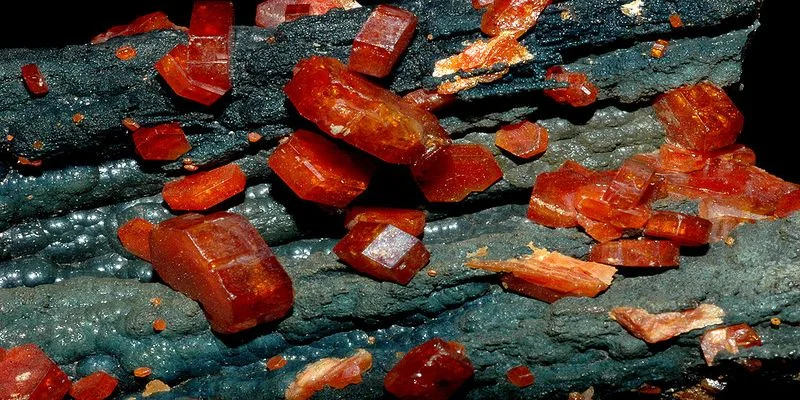
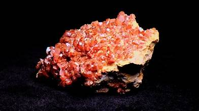

El Vanadio es un metal de transición de color gris, plateado, brillante y blando. En la ciencia y la industria es muy valioso porque es extremadamente resistente a la corrosión y tiene la increíble capacidad de hacer que otros metales, como el acero, se vuelvan muchísimo más fuertes, duros y ligeros cuando se mezclan con él.

Rara vez se encuentra libre en la naturaleza. Se extrae de minerales como la vanadinita y la patronita, o como subproducto de la minería del titanio, hierro y uranio.
El 80% del vanadio producido se alea con hierro para obtener el "ferrovanadio", utilizado para fabricar acero de altísima resistencia para engranajes, ejes de vehículos, herramientas de corte de alta velocidad y reactores nucleares.
Es considerado el "músculo" de la industria pesada. Sin el vanadio, los chasises de los vehículos modernos o las herramientas industriales serían demasiado pesados o frágiles.
El polvo del vanadio y sus compuestos (como el pentóxido de vanadio) son altamente tóxicos al inhalarse. Causan irritación severa en los pulmones y vías respiratorias, por lo que se recomienda estrictamente el uso de equipos de protección (EPP) en la industria.